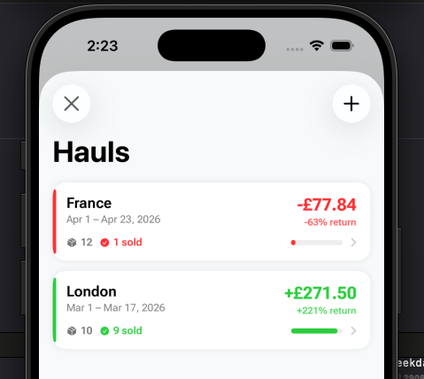
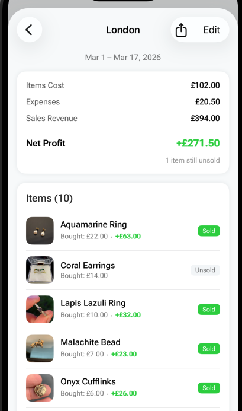

Last updated: 23 April 2026
How to Track Whether a Sourcing Trip Was Actually Worth It
My wife and I went on a sourcing trip to France in April. Eurotunnel tickets, fuel there and back, entry fees at three different markets, bought about 15 items across two days. Came back feeling good about the finds.
Then the question hit — did we actually make money on that trip? Or did we just have fun spending it?
The expenses were scattered across different categories. The items were mixed in with everything else we bought that month. There was no simple way to track profit per sourcing trip without pulling out a spreadsheet.
So we built a way to do it inside the app.
A haul = one sourcing trip, fully tracked
A Haul in FlipperHelper is one sourcing trip — a car boot run, a market visit, a weekend road trip. You group the items you bought and the expenses you paid into one place, and the app calculates whether that trip made or lost money.
Here’s how tracking a sourcing trip works in the app:
- Create a haul — give it a name (e.g. “France April”) and set the date range
- Select the items you bought on that trip — the app shows all items from that period (with photos) — just tap to select
- Add all expenses related to that trip — fuel, entry fees, Eurotunnel, parking, food — whatever you spent
- Instantly see total cost vs revenue — items cost, expenses, sales so far, and net profit or loss
The profit updates automatically over time. You sell an item three months later and the haul’s numbers change. So you can check back and see exactly when a trip turned profitable.

Example: a real sourcing trip breakdown
Haul: France April
Items bought: 15 · Total cost: £85
Expenses: £120 (Eurotunnel £80, fuel £25, entry fees £15)
Sold so far: 9 items · Revenue: £310
Net profit: +£105
6 items still unsold — profit will keep growing
Without grouping this into a haul, those £120 in expenses would just be monthly totals. You’d never know that this specific trip was the reason April was profitable.

The problem with tracking per-trip profit
Most reselling tools — apps, spreadsheets, whatever — track items and expenses as flat lists. That works for overall monthly profit. But it doesn’t answer the question: was this specific trip worth the drive?
Calculating your reselling trip profit is harder than it looks because costs are spread across categories:
- Transport: fuel, Eurotunnel, parking, tolls
- Entry fees: car boot entry, antique fair admission
- Items: everything you bought
- Other: food, accommodation for overnight trips
And the revenue comes in over weeks or months as items sell. You can’t evaluate the trip on the day you get home — you need to track it over time.
Why per-trip tracking changes how you source
Once you have a few hauls tracked, patterns emerge. Maybe your local car boot trip profit is consistently good because expenses are low. Maybe that road trip to a big antique fair looked exciting but barely broke even once you counted fuel and accommodation.
Without per-trip tracking, all you see is monthly totals. You might be doing 10 trips a month and not realise that 3 of them are losing money and dragging down the profitable ones.
With hauls, you can track profit per sourcing trip and make better decisions about where to spend your weekends.
Share your trip results
We also added shareable cards for hauls. Same style as the existing share cards in the app — clean design, shows your items, the number of pieces, and what you invested. Post your trip results on Instagram, TikTok, or wherever you share your reselling content.
Cash vs card tracking on expenses
We also added the ability to tag every expense as cash or card. My wife asked for this one — at car boots and markets almost everything is cash, and it’s easy to lose track of how much actually went out. Card expenses show on your bank statement but cash just disappears unless you wrote it down.
How to get started
If you’re already using FlipperHelper, update to the latest version. You’ll see a Hauls card on the home screen — tap it to create your first haul.
If you’re new, the app is free on the App Store. No account required, works offline, no ads. Check our FAQ if you have questions, or read our guide on how to track reselling profits properly for the full picture on expense tracking.
Frequently asked questions
How do I know if a car boot sale trip was profitable?
Add up all trip costs (entry fees, fuel, parking, items purchased) and compare against total revenue from selling those items. The trip is profitable once sales exceed total costs. FlipperHelper’s Hauls feature tracks this automatically and updates as items sell.
What is the best way to track reselling expenses per trip?
Group your expenses and items by trip. Include entry fees, transport costs, and any other trip-specific spending. In FlipperHelper, create a Haul for each trip — the app calculates total cost vs revenue automatically.
How long does it take to know if a sourcing trip was worth it?
It depends on how quickly your items sell. Some sell within days, others take months. Per-trip tracking that updates over time is ideal — check back periodically and see the trip moving from a loss into profit.
Related reading
- Car Boot Sale Tips — what to buy, what to avoid at car boots
- Flea Market Flipping Guide — sourcing at flea markets and outdoor events
- Estate Sale Flipping Guide — higher-quality sourcing with strong margins
- Garage Sale Flipping Guide — finding profitable items at garage sales
Start tracking profit on every sourcing trip
Create a haul, add your items and expenses, see exactly what each trip made or lost. Free on iOS and Android — no account, works offline.
Download Free on the App StoreGet it Free on Google Play